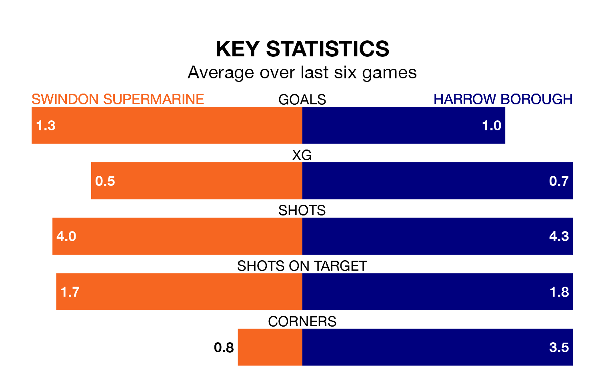

Swindon Supermarine face Harrow Borough at the Webbs Wood Stadium on Saturday looking to secure a first win in six Southern League Premier – South games.
Swindon Supermarine have lost three and drawn two matches since they last earned three points – against Walton and Hersham on January 13.
They face a Harrow side who have won one and drawn two over that time.
Harrow are bottom of the table after 29 games, of which they have won four and drawn seven, earning 19 points.
Swindon Supermarine are four places ahead of Borough in 18th, with eight wins and seven draws putting them on 31 points.
In the last 10 years, Swindon Supermarine and Harrow have played each other on eight occasions. They won three each, and they drew twice.
On average, Swindon Supermarine scored 2.0 goals and Harrow 1.9 in those matches.
Their last meeting was on October 14, when they played out a 2-2 draw.
With 36 goals in 29 games so far this season, the visitors are the league's third-lowest scorers with 1.2 goals per game. And they are conceding more than average, letting in 67 goals at a rate of 2.3 per game.
The home side, meanwhile, are average scorers, with 1.7 goals per game. They have conceded 2.4 goals per game.
Swindon Supermarine's last match was on February 10, a 4-0 loss against Chesham United.
Harrow drew 3-3 with Didcot Town last time out, also on February 10.
Updated: 12:06 (UTC), 15/02/24